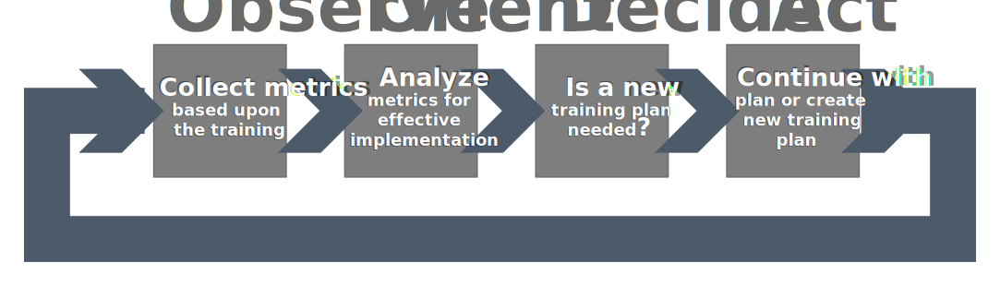
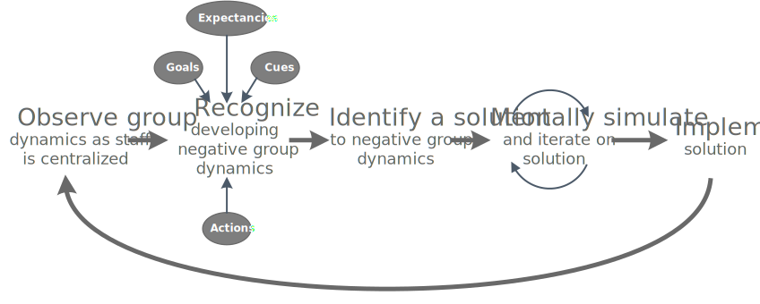

Human Resources are the moving parts of a service organization.
Keeping them working optimaly takes care and effort.
A major part of the proposed business model involves relocating and training of the customer service representatives. Each of these activities will have an impact on the effectiveness of the employees and in turn an impact on the effectiveness of the proposed changes. Some of these issues can be prepared for through careful planning by management and skilled Human Resource staff.
One event that can be planned for is in effective implementation of the provided training. The training itself is known to be effective, but that does not ensure that each employee will implement it effectively. As such a plan will be put in place beforehand to observe the results and effectiveness of the training implementation so that a decision can be made and action taken to mitigate the issue before there can be a significant impact. This plan will be actioned by the management of the customer service representatives as they will be able to observe daily metrics and put actions into place quickly. The plan also empowered the management to take the actions necessary to correct the issue without having to rely on preprepared solutions or executive authorization.
Another event that can be planned for is the changing group dynamic as staff is centralized. As training is implemented and employees find themselves working around different colleagues the dynamics of the team can change rapidly with either positive or negative results. It will be the responsibility of skilled Human Resource staff to continuously monitor the group dynamics and use their skills to recognize developing negative dynamics. Using their past experience, goals, and exceptions the Human Resource staff will be able to identify solutions to potential problems that will arise, they will also be able to capitalize on positive dynamics to improve the effectiveness of the group.

These two situations are examples of the many decisions that will be taking place dynamically throughout the implementation of the the proposed business model. Identifying the decision models that will be used in these circumstances will allow for additional modeling and analysis of the results and effectiveness of the decisions. With this analysis improved planning and decisions can be had to improve the success of the project.